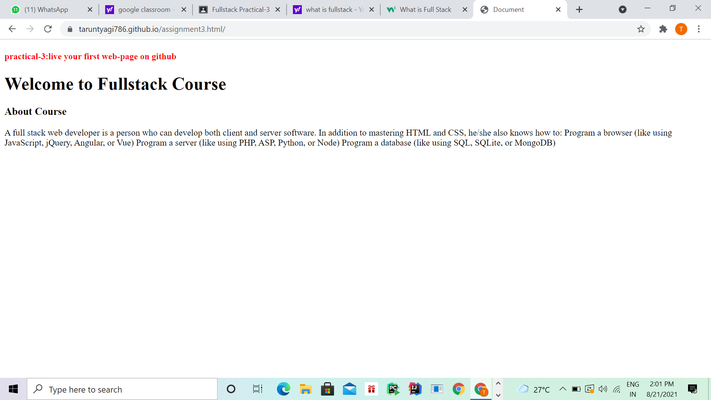

A full stack web developer is a person who can develop both client and server software. In addition to mastering HTML and CSS, he/she also knows how to: Program a browser (like using JavaScript, jQuery, Angular, or Vue) Program a server (like using PHP, ASP, Python, or Node) Program a database (like using SQL, SQLite, or MongoDB)
live page on github